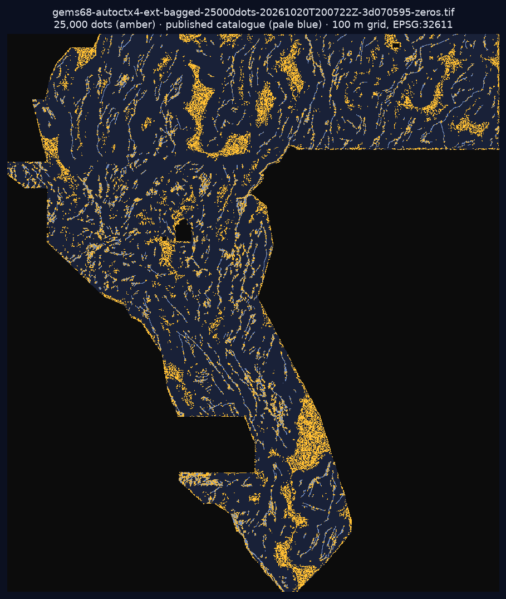

Executive summary
DOE GEMS Prize (DrivenData #306) · lane: auto-context stacked refinement · built 20261020T200722Z UTC · every number below is read from evidence/run_card.json.
The submission file
⬇ Download gems68-autoctx4-ext-bagged-25000dots-20261020T200722Z-3d070595-zeros.tif ⬇ ZIP (same TIFF) NaN-outside variant (secondary)
| Submission name (paste into the form's file name / your notes) | gems68-autoctx4-ext-bagged-25000dots-20261020T200722Z-3d070595-zeros |
|---|---|
| Note (≤140 chars, paste into "Note") | GEMSDOE68 autoctx4 ext+bagged s3; 25000 dots >2px off cat; HOLDOUT-DTI 0.1219 vs s1 0.0711 seed42; UNSCORED (107 chars) |
| SHA-256 | 99e00aa5f7137306271f12227dea5da476f8d2943a84fcfffe8dc4b94b43335c |
| Format | float32 · single band · EPSG:32611 · 3730×3292 · 100 m · transform (100,0,243350,0,−100,4508550) · values exactly {0,1} · 0 outside footprint (all finite) |
| Validator | no NaN inside footprint: True · values in [0,1]: True · CRS/shape/transform match: True · zero dots on mapped catalogue: True |
| Emission | 25,000 binary dots · all > 2 px from the published catalogue (min 2.24 px, median 52.8 px, p95 125.3 px) · 5×5 local maxima of the stage-3 surface |
| Organizer-confirmed score | none — UNSCORED. No number on this site is a leaderboard score. |
What the holdout says (HOLDOUT-DTI, evaluator gems57-pooled-hide-v2, 11,348 withheld positives)
| stage 1 (per-pixel) | stage 3 (auto-context) | paired Δ | 95 % CI (20 km block bootstrap) | gate | |
|---|---|---|---|---|---|
| all scored pixels, 25,000-dot budget | 0.0711 | 0.1219 | +0.0509 | [0.0377, 0.0640] | pass |
| pixels > 1 km from any mapped fault | 0.0623 | 0.0871 | +0.0249 | [0.0147, 0.0354] | pass |
Gate (from the brief): stage 2 must beat stage 1 by > 2 SE on the outer blocks, including on pixels > 1 km from any mapped fault. Holdout truth is withheld catalogue components; the live truth is unmapped faults, so these numbers rank methods — they do not predict a leaderboard value.
Lane uniqueness (protocol rule 1) — 69 prior rasters checked
Max Spearman rank-correlation of the surface vs any registry raster: 0.1056 (QUARANTINED-gems32-heatfield-44090-cv-supconfined-zeros.tif) · threshold 0.90. Max share of dots within 3 px of one registry raster's dots: 61.0 % (gems68-autoctx-s3-hidedraw-38000dots-20261012T022132Z-4c18def6-nan.tif) · threshold 70 %. Duplicate: False.
| registry raster (top 5 by rank-corr) | ρ |
|---|---|
| QUARANTINED-gems32-heatfield-44090-cv-supconfined-zeros.tif | 0.1056 |
| gems68-autoctx-s3-hidedraw-38000dots-20261012T022132Z-4c18def6-nan.tif | 0.0828 |
| gems68-autoctx-s3-hidedraw-38000dots-20261012T022132Z-4c18def6-zeros.tif | 0.0828 |
| 57GEMSDOE__h57-anatomy-enechelon-zeros.tif | 0.0704 |
| 57GEMSDOE__h57r2-shipped8-all-flank0-20261009T180433Z-90e532947353-zeros.tif | 0.0596 |
| registry raster (top 6 by dot overlap) | share of our dots within 3 px | that raster's own 3 px footprint coverage | lift (overlap ÷ coverage; 1.0 = chance) |
|---|---|---|---|
| gems68-autoctx-40000-20261012T014104Z-surface-zeros.tif | 100.0 % | 100.0 % | 1.00 |
| gems61-lane-buried-step-gravinversion-hgm-r3-k400k-b2zeros.tif | 93.8 % | 95.8 % | 0.98 |
| gems68-autoctx-s3-hidedraw-38000dots-20261012T022132Z-4c18def6-nan.tif | 61.0 % | 17.9 % | 3.40 |
| gems68-autoctx-s3-hidedraw-38000dots-20261012T022132Z-4c18def6-zeros.tif | 61.0 % | 17.9 % | 3.40 |
| gems61c-gravstep-liveband-40k-20261011.tif | 22.2 % | 21.2 % | 1.05 |
| 19GEMSDOE__h19-4-multiline-corroborated.tif | 20.4 % | 20.4 % | 1.00 |
Rasters whose 3 px halo covers more than 70 % of the footprint are excluded from the duplicate verdict (they overlap every candidate by construction): gems61-lane-buried-step-gravinversion-hgm-r3-k400k-b2zeros.tif, gems68-autoctx-40000-20261012T014104Z-surface-zeros.tif.
⚠ Several earlier candidates exist in this repository — superseded
| candidate | status (from its own evidence) | recommendation |
|---|---|---|
gems68-autoctx-40000-20261012T014104Z-zeros.tif | own holdout gate failed (evidence/holdout.json) | do not submit |
gemsdoe68-autocontext-s2-20261012T014136Z-zeros.tif | no holdout DTI / gate recorded | not evidenced — do not spend a slot |
gems68-autoctx-s3-hidedraw-38000dots-20261012T022132Z-4c18def6-zeros.tif | Exp 2 gate passed on the same seed used for selection; superseded by the fresh-seed Exp 3 file below | superseded |
GEMSDOE68-AC-stack2-20261012T042050Z-zeros.tif (lane68 subsite) | far->1 km gate missed (t = 1.97); "zeros" file actually carries NaN outside (IR-68-ZEROS) | superseded |
gems68-autoctx4-ext-bagged-25000dots-20261020T200722Z-3d070595-zeros.tif | Exp 4: pre-registered stage 3 @ 25,000, gate passed on FRESH seed 42 (table above). Exp 3's 38k candidate failed on seed 31 — logged negative. | the current candidate |
All earlier files remain in docs/downloads/ for audit; the uniqueness check above includes them as prior rasters.
Where the dots are (sanity map) and the key risk

Risk, stated plainly: only 13 % of these dots lie within 300 m of the H33-2-B2 file's dots, and the median dot is 5.3 km from the published catalogue (champion ≈ 2.0 km). Part of the surface is area-fill in regional highs rather than lines (IR-68-BLOB-01). The holdout says this ranks withheld faults better — including far from mapped faults — but the holdout's truth is catalogue components, not the panel's new faults. This file is a genuinely different bet, not an increment on the champion.
One-paragraph answer: why 0.2778, and can it be beaten?
The owner-reported 0.2778 attribution concerns h33-h33-2-b2 (GEMSDOE32) — note that the file's own audit JSON and the GEMSDOE32 site describe it as UNSCORED, projected 0.2747, on the owner-reported 0.2708 base, so 0.2778 has no organizer receipt anywhere in this checkout (IR-01). The file itself is a binary field of 37,654 dots, the last rung of a pruning ladder on one per-pixel field (0.1922 solid → 0.2477 → 0.2600 → 0.2708 → 0.2778). The metric DTI = T/(0.2·(T+S−M)+0.8·|G|) charges 0.2 per emitted unit that is not within 300 m of an uncovered new fault, so deleting low-credit mass — first the field's tail, then the 100–200 m halo of the published catalogue — paid at every step. What is left to win is ranking: the same ≈38 k dots must carry more kernel credit toward real unmapped faults. That is a field problem, and auto-context (continuity, parallelism, en-échelon spacing learned from the stage-1 map) is the cheapest principled attack on it. The full derivation and provenance tags are in Why 0.2778; the measured result of this lane is on the Experiments page.